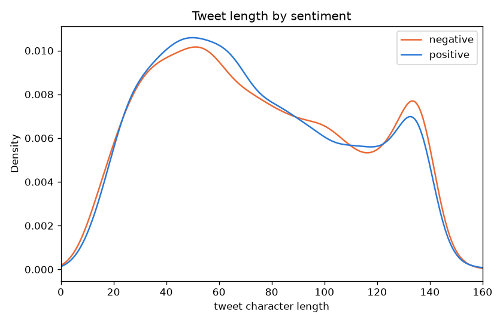
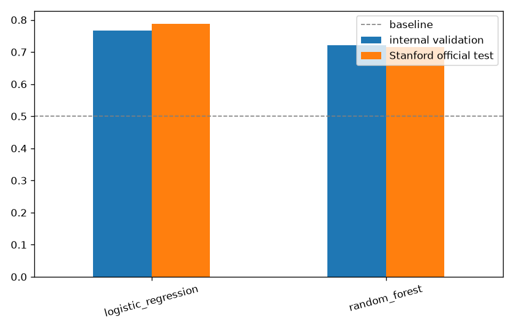
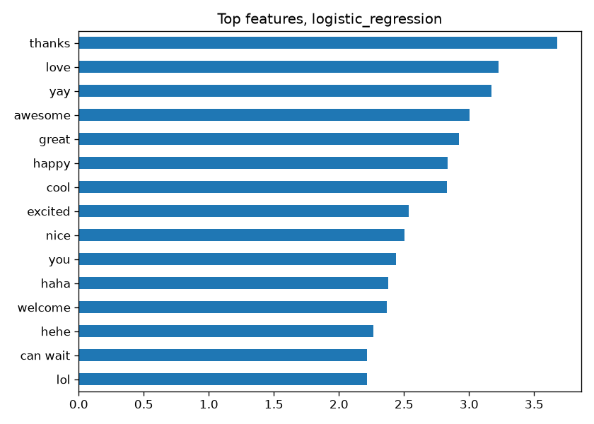
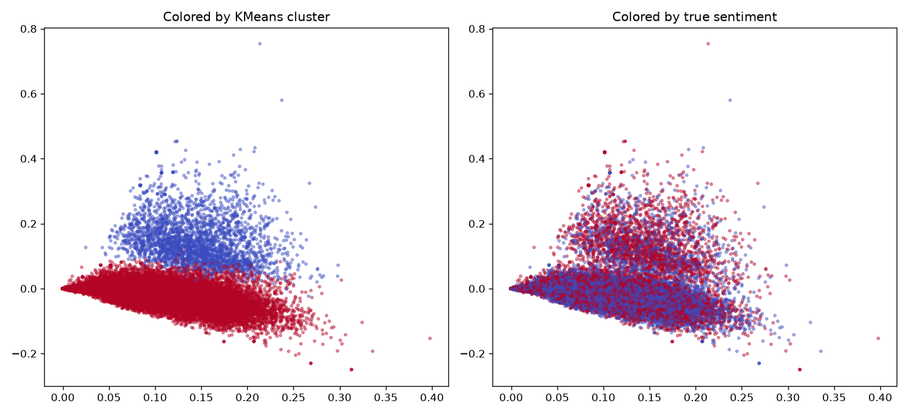

Sentiment140: A Real Train/Test Split, Finally
Two original notebooks, neither ever produced a usable model.
One ends in Dense(1, activation='softmax'), softmax
on a single unit always outputs 1.0 no matter the input, and a
reshape that flattens a one-hot label matrix into a meaningless
single column. The other scales raw integer token IDs with
StandardScaler and depends on a TensorFlow 1 TPU API
removed years ago. Neither ever evaluated on a real held-out test
set.
What the originals actually did
- A softmax that can't do anything.
Dense(1, activation='softmax'), softmax normalizes across units, with only one unit it always outputs exactly 1.0. - A reshape that destroys the labels.
dummy_train.reshape(8000000, 1)flattens a (1,600,000 x 5) one-hot matrix (from runningto_categoricalon raw 0/4 labels instead of remapping to 0/1 first) into one meaningless column of 8 million numbers. - 36,844,338 features, hardcoded.
CountVectorizer(ngram_range=(1,5))on 1.6M tweets, with that exact number typed into the next layer'sinput_shape, training never got past this point. - Scaling categorical token IDs. The second
notebook applies
StandardScalerto raw integer word indices, treating a category label as if it were a continuous quantity. - No real evaluation, ever. Both notebooks skip
a genuine train/test split, and the official
testdata.manual.2009.06.14.csvwas loaded once and never scored.
A suspected bug that turned out not to be real
Sentiment140's labels were originally assigned automatically by emoticon (":)" or ":("), a classic leakage risk if those emoticons are still sitting in the text used as model input.
training.1600000.processed.noemoticon.csv, says why:
Stanford already stripped emoticons during their own preprocessing,
before this data was ever released. Worth checking, but not a real
issue in this file.
What actually correlates with sentiment
| Factor | Statistic | Result |
|---|---|---|
| Tweet length | Mann-Whitney | p = 0.12 (not significant) |
| Mentions someone (@) | chi-square | p < 0.0001 |
| Uses an exclamation mark | chi-square | p < 0.0001 |

Positive tweets mention someone 54% of the time versus 39% for negative tweets, and use exclamation marks 35% versus 25%. Length alone says nothing about sentiment.
Modeling: evaluated on data the model never saw
A 5,000-feature TF-IDF matrix (versus the original's 36.8 million), logistic regression and random forest, evaluated two ways: an internal held-out split of the training sample, and Stanford's own 359 binary-scorable hand-labeled tweets, a genuinely different data source neither model ever saw during training.
| Model | Internal val. accuracy | Official test accuracy |
|---|---|---|
| Baseline (majority class) | 50.0% | 50.7% |
| Random forest | 72.1% | 71.6% |
| Logistic regression | 76.6% | 78.8% |


Unsupervised: TF-IDF clustering finds topic, not sentiment

Essentially chance-level agreement with the real labels. TF-IDF captures which words co-occur, mostly what a tweet is about, not how the author feels. "My flight is delayed" and "my flight got upgraded" share most of their vocabulary while having opposite sentiment, unsupervised clustering has no way to distinguish them. This is exactly why the supervised models above, which get to learn from the label directly, do so much better.
Key findings
- Both original notebooks had a broken final model, one a mathematically meaningless single-unit softmax and a reshape that destroyed the label structure, the other dependent on a removed TensorFlow 1 API and a category-as-continuous scaling error.
- Neither ever evaluated on a real held-out set. This rebuild scores against Stanford's own hand-labeled tweets, not just an internal split.
- The suspected emoticon-leakage bug wasn't actually real in this file, Stanford's own preprocessing already stripped emoticons before release.
- Logistic regression reaches 78.8% on the genuinely external test set, and generalizes slightly better there than on its own internal validation, a good sign.
- Unsupervised TF-IDF clustering can't find sentiment at all (ARI ~0.01), it finds topic structure instead, a real and informative limitation of bag-of-words features.
Future work
- Scale up training beyond 20,000 tweets, the full 1.6M-tweet corpus almost certainly has more signal than a TF-IDF logistic regression can currently extract.
- Try a proper neural approach with pretrained word embeddings or a transformer (unlike the original's broken LSTM/TPU attempt), now that a correct baseline and evaluation exist to compare against.
- Build a genuine 3-class model (negative/neutral/positive) to make full use of Stanford's official test set instead of excluding its 139 neutral tweets.